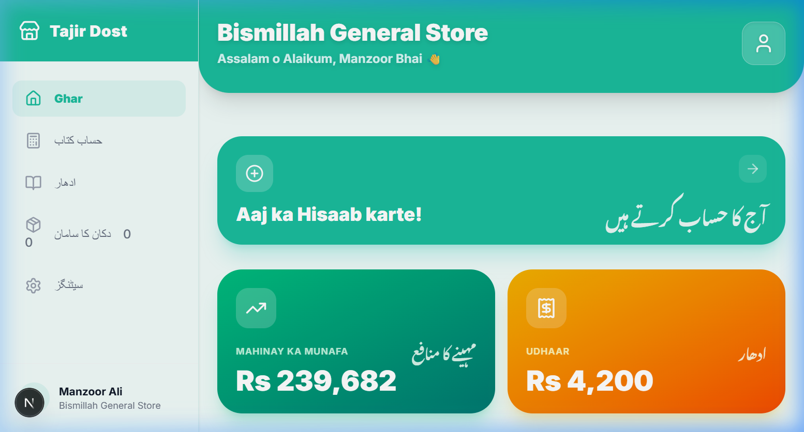
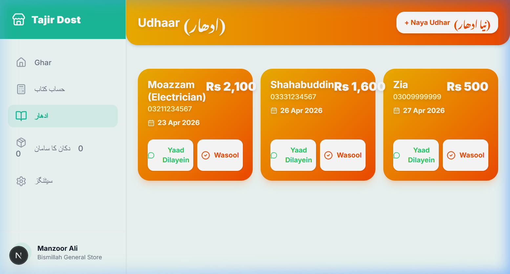
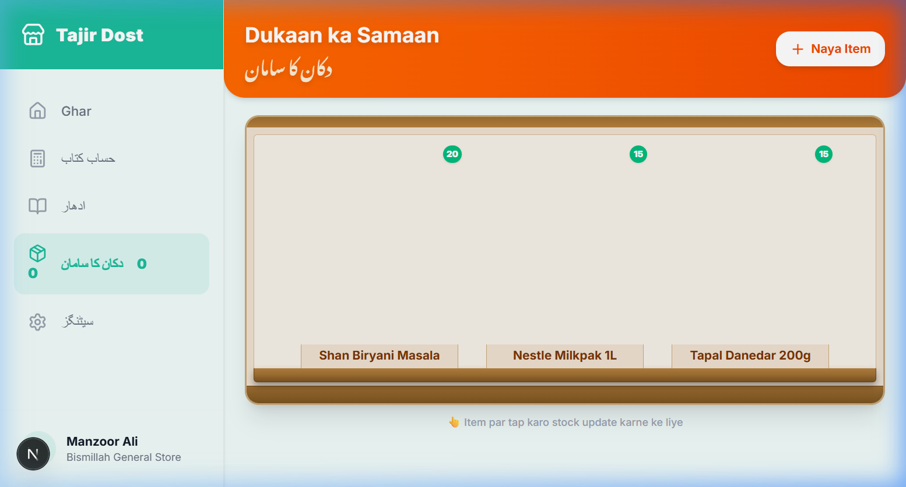

Software Engineer Take-Home Assignment 2026
I built Tajir Dost (The Trader's Friend), a mobile-first digital assistant designed for small-scale kiryana store owners in Pakistan. Unlike complex POS systems, Tajir Dost focuses on the "unspoken" workflow of the shopkeeper: tracking daily profit, managing the high friction of credit (Udhaar), and reducing the exhaustion of manual inventory checks.


The "Time Theft" of Inventory: Store owners like Manzoor Ali spend up to 4 hours physically auditing shelves. Tajir Dost uses a visual shelf system that alerts the owner the moment an item is running low, allowing them to restock proactively with a single tap.
The "Social Friction" of Credit: Recovery is the most painful part of the business. By automating reminders via WhatsApp and embedding the shop's bank details (Easypaisa/JazzCash), the app removes the awkwardness of asking for money face-to-face.
The "Zero-Tracking" Blindness: Many owners fly blind financially. The "Aaj ki Kamai" (Today's Earnings) flow is designed to be so fast and bilingual that it takes less than 10 seconds a day, bringing financial visibility to those who currently track nothing.
My interviews with 5 local shopkeepers in Lahore were eye-opening. The most convincing moment was when Manzoor Ali described his 4-hour physical stock checks as "exhausting." It wasn't just a chore; it was time stolen from his family.
Similarly, Muhammad Ali told me he completely stopped offering Udhaar because recovery was "too frustrating." This was a direct loss of revenue for him. Seeing Moazzam manually write down physical home addresses just to track small debts proved that the current "manual system" is a logistical nightmare. These aren't abstract business problems; they are daily stresses that affect their quality of life.
